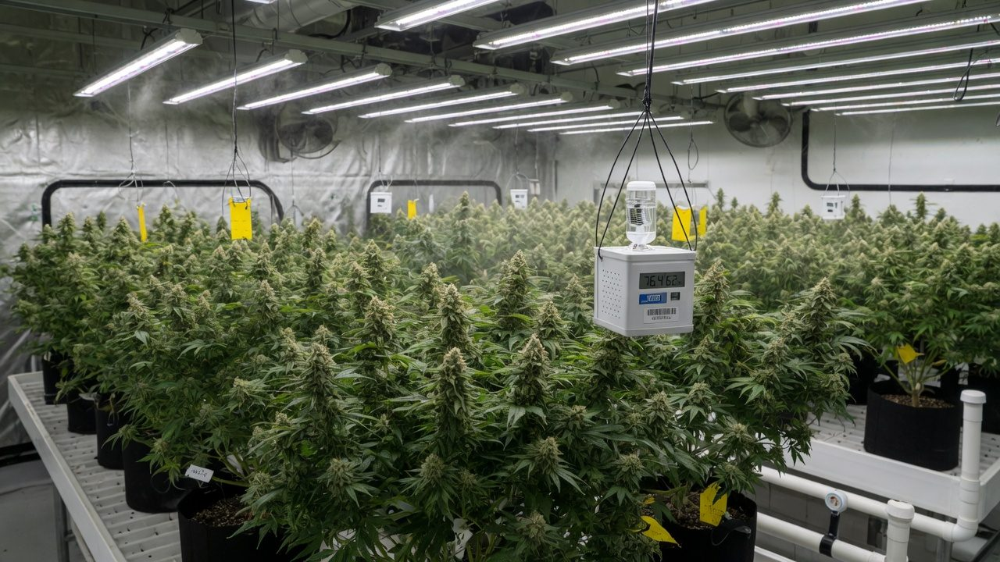
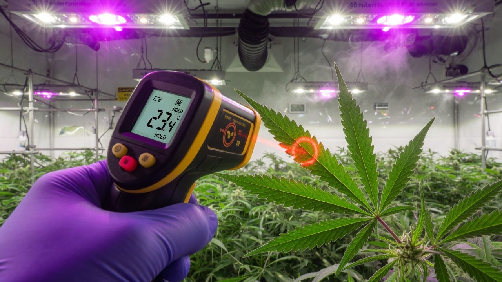
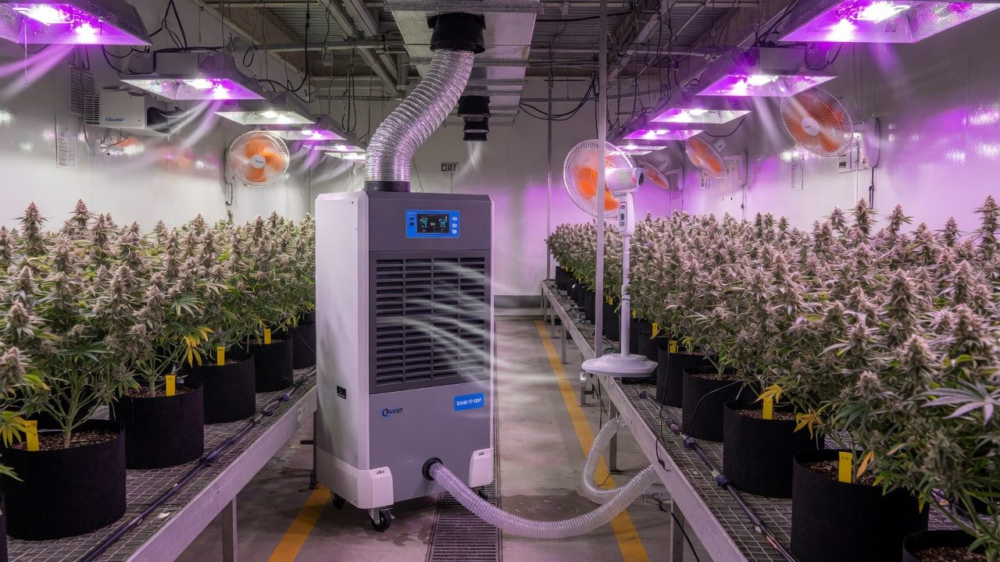

Temperature, humidity and VPD: the air the plant feels
VPD is the one climate number the plant actually feels. What it is, the equation in a form you can use, why leaf temperature — not air — sets the real number, stage bands you can defend, the night-time dew-point discipline that keeps mould out, and how to measure it all without lying to yourself.
The air the plant feels
Two rooms both read 55% humidity. One is at 20 °C and the plants are coasting. The other is at 28 °C and the same cultivar is stalled, leaf edges curling, drinking hard. Same number on the controller, completely different rooms — because relative humidity is a percentage of a moving target, and the plant doesn’t feel percentages. It feels the pull: how hard the air is trying to drag water out of its leaves.
That pull has a name — vapour pressure deficit, VPD — and it is the number your temperature and humidity actually combine into. Air holds water vapour up to a ceiling set by its temperature; VPD is the gap between that ceiling and what’s actually in the air[1]. Every leaf transpires into that gap. Small gap, weak pull. Big gap, hard pull — until the plant slams its pores shut in self-defence[2].
This paper is the psychrometrics you need without the textbook: what VPD is, the equation in a form you can punch into a phone, why leaf temperature is the real number and how your fixture type skews it, stage bands and where they come from, the day/night strategy, the dew-point discipline that keeps bud rot out, and how to measure it all without the sensor lying to you. No prior physics assumed. Every term is defined.

Accuracy, self-review, and grain-of-salt notes
We've gone to great lengths to keep these guides honest. One of the main ways we do that is self-review: we actively look for claims that are subjective, only lightly backed by literature, or based on grower practice rather than a controlled study — and we call those out instead of dressing them up as settled science.
Often there simply is no paper for the decision you're making. In those cases we're drawing on what other growers report and what has worked in our own rooms. That can still be useful — but it is not a lab proof. Do what works for your plants, your room, and your meters. If a table disagrees with your crop, believe the crop and log the difference.
- Core definitions and measurement units used in the paper
- Safety-critical limits where occupational or standards sources are cited
- Numeric stage targets (light, climate, feed) as starting bands, not laws
- SOPs that work in many rooms but need your genetics and meters
- Any single-number 'guaranteed' yield or potency claim without a multi-site trial
- Controller setpoints copied from another facility without re-calibration
See something glaringly wrong? Tell us and we'll fix it. Please open a GitHub issue with the paper name and what looks off (include a source if you have one): Report an accuracy issue. Local law, labels, and licences always override any recipe here. Inline notes labelled grain of salt flag the highest-risk over-trust points in the text.
Ten terms and you can read any climate chart
A ceiling, a level, and the gap between them
Think of air as a tank whose height changes with temperature. Warm the air and the tank gets taller — it can hold more vapour. The water already in it doesn’t change just because you warmed the room; only the headroom changes. That headroom — the gap between the ceiling (es) and the level (ea) — is VPD.
This is the whole reason plants respond to VPD and not RH: water moves out of a leaf by diffusion, and diffusion is driven by the absolute difference in vapour pressure between the saturated air inside the leaf and the room air outside it — not by a ratio[2]. Two rooms at the same RH can pull on the crop completely differently. Two rooms at the same VPD pull the same, whatever their RH says.
The curve is the single most useful piece of physics in climate control, because everything annoying about grow-room humidity falls out of it: why the room spikes to 90% RH at lights-off (the ceiling dropped, the water stayed), why a heater ‘dries’ the air without removing a gram of water, and why summer rooms drink so much harder at the same RH.
RH is a percentage of a moving ceiling. VPD is the gap. The plant lives in the gap.
The equation, in a form you can actually use
Everything runs on one empirical formula for the ceiling, good to a fraction of a percent over grow-room temperatures. It is the Tetens equation as standardised in FAO Irrigation and Drainage Paper 56[1], with T in °C and the result in kPa:
es(T) = 0.6108 × e(17.27 × T) / (T + 237.3) kPa
Then: ea = es(Tair) × RH / 100 and VPDair = es(Tair) − ea = es(Tair) × (1 − RH/100)
Worked once, slowly, with the numbers you’ll see all through this paper:
If you’d rather not raise e to anything before coffee, a lookup row of ceilings covers most rooms — multiply by (1 − RH/100) and you’re done:
| Air temp | es (kPa) | VPD @ 50% RH | VPD @ 60% RH | VPD @ 70% RH |
|---|---|---|---|---|
| 18 °C | 2.06 | 1.03 | 0.83 | 0.62 |
| 20 °C | 2.34 | 1.17 | 0.94 | 0.70 |
| 22 °C | 2.64 | 1.32 | 1.06 | 0.79 |
| 24 °C | 2.98 | 1.49 | 1.19 | 0.90 |
| 26 °C | 3.36 | 1.68 | 1.34 | 1.01 |
| 28 °C | 3.78 | 1.89 | 1.51 | 1.13 |
| 30 °C | 4.25 | 2.12 | 1.70 | 1.27 |
1 kPa = 10 mbar = 10 hPa. Some US charts use pounds per square inch or grains of moisture — ignore them, the cultivation literature and every serious controller speak kPa. Ranges you will meet in a grow room: roughly 0.2 (fog) to 2.5 (desert).
Leaf temperature, not air temperature, sets the pull
Here is the correction that separates people who chart VPD from people who control it. The air inside a leaf is saturated at the leaf’s temperature. So the gradient driving transpiration is not es(air) − ea — it is es(leaf) − ea[2]. If leaf and air were always the same temperature the distinction wouldn’t matter. They aren’t.
A healthy, transpiring canopy runs close to air temperature — typically within about 2 °C under any light source — but which side of air it sits on depends mostly on the radiation hitting it[3]. An HPS lamp throws a large radiant load onto the canopy and pushes leaves above air temperature. An LED fixture convects most of its heat away at the heatsink, so a transpiring leaf — cooling itself by evaporation — commonly sits below air temperature. At equal light levels the modelled difference is about 1.3 °C between the two technologies[3], and grower tooling conventionally assumes LED canopies run 1–3 °C cool[6].
Run the worked example again with real leaf temperatures and watch the answer move. Air 25 °C / 60% RH says 1.27 kPa — textbook flower climate. If the LED canopy sits at 23 °C, the leaf feels es(23) − 1.90 = 0.91 kPa — veg territory, a third wetter than the dashboard claims. Under HPS with the leaf at 26 °C it feels 1.46 kPa — top of the flower band. Same room. Three answers.
Most rooms that converted HPS → LED kept their old temperature and humidity targets. Their air VPD looks right while their leaf VPD runs a band low — a quietly wetter crop: softer growth, slower drybacks, more condensation margin eaten at night. If you converted fixtures and mould pressure rose, this arithmetic is probably why. Raise air temperature a degree or two, or drop RH, and re-check against leaf numbers.
The offsets above assume a transpiring, well-watered canopy. A drought-stressed leaf that has shut its stomata loses its evaporative cooling and can climb 6–12 °C above air temperature[3]. If your IR thermometer reads a leaf running hot, the plant isn’t asking for a chart correction — it’s telling you transpiration has stopped. Check the root zone before you touch the climate.
The VPD chart and how to read it
The classic grower chart is just the equation pre-computed: temperature down the side, RH across the top, the deficit in every cell. Here it is, coloured by the stage bands from the next section:
- 1Measure where the plants liveAir temperature and RH at canopy height, mid-room — not at the controller on the wall. Placement is half the battle (section 11).
- 2Get a leaf temperatureIR thermometer or canopy sensor on a lit, upper leaf. No reading? Assume leaf ≈ air under HPS, 1–2 °C below air under LED[3].
- 3Read the cellFind your temperature row and RH column. That number, in kPa, is what your air is asking of the crop.
- 4Correct for the leafCooler leaf = real VPD lower than the cell; warmer leaf = higher. At 25 °C / 60%, a 2 °C-cool canopy turns 1.27 into 0.91 kPa — don't guess, use a leaf-offset calculator or a controller that takes leaf temperature[6].
- 5Move along one axis at a timeToo dry? Slide left (raise RH) before you slide up the temperature column. One change, fifteen minutes, re-read.
27 °C / 65% and 21 °C / 45% both land near 1.3 kPa, but they are not interchangeable climates: temperature has its own biology on top of VPD. Cannabis photosynthesis peaks around 25–30 °C[7], morphology and stretch respond to the day/night temperature difference[10], and disease pressure rides on absolute humidity. Pick the temperature your stage and fixture want first; use humidity to dial the VPD around it.
Stage bands: convention, hedged honestly
The bands below are the industry’s working convention, not a law of nature. They come from grower practice converging over a decade[6], they sit inside the ranges recommended by the cannabis production literature[5], and the one controlled cannabis humidity experiment we have brackets them from the wet side: flowering at 0.05–0.25 kPa instead of ~0.9–1.3 kPa cost 71% of flower biomass, delayed flowering three weeks and slashed cannabinoid concentration[4]. Treat the band as the middle of the road; your cultivar, light intensity and mould ceiling steer within it.
| Stage | Leaf VPD band | Why | Example combo (air-basis) |
|---|---|---|---|
| Clones / fresh seedlings | 0.4–0.8 kPa | Little or no root; the shoot must not out-transpire uptake | 24 °C / 75–80% RH → ~0.6–0.7 |
| Early veg | 0.8–1.1 kPa | Roots established; push gas exchange without stressing | 25 °C / 65–70% RH → ~1.0 |
| Late veg | 0.9–1.2 kPa | Full canopy, high light; keep flux strong and steady | 26 °C / 62–68% RH → ~1.1–1.3 |
| Early–mid flower | 1.1–1.4 kPa | Drive water and nutrient throughput through peak bulk | 26 °C / 58–62% RH → ~1.3–1.4 |
| Late flower | 1.2–1.5 kPa | Dense buds: the mould ceiling now outranks the VPD target | 24 °C / 50–55% RH → ~1.4–1.5 |
Nobody has published a dose–response curve of cannabis yield against VPD across stages; the bands interpolate physiology, production reviews and fleet practice. What the evidence does say clearly: far too wet is expensive[4], far too dry shuts stomata and throttles photosynthesis[2], and stable beats perfect — plants held at a steady moderate VPD out-grow ones yo-yoing around the ‘ideal’ number[8].
Transpiration: what the deficit actually drives
VPD matters because transpiration is the crop’s engine, and VPD is its throttle. Water evaporates from cell walls inside the leaf and diffuses out of the stomata into the deficit. That loss puts the whole water column under tension, pulling water — and everything dissolved in it — from the root zone up through the plant. Calcium in particular only travels with this stream, which is why chronically wet, low-VPD air shows up later as weak tissue and tip burn in fast growth. Evaporation also carries heat away: transpiration is the plant’s own air-conditioner, the reason a healthy LED canopy reads cooler than the room[3].
The crucial subtlety: the response is not linear. As VPD climbs past the plant’s comfort range, guard cells progressively close the stomata to protect the water column. Transpiration stops rising and can fall; CO2 intake — and photosynthesis with it — throttles down at exactly the moment your lights are begging for gas exchange[2]. Cranking the deficit does not crank the engine. It floods the clutch.
- Too low (<0.4 kPa): open pores, no gradient. Growth goes soft and stretchy, calcium delivery sags, water films sit on tissue, guttation overnight — and the flowering cost is documented and brutal[4].
- In the band: steady pull, cool leaf, open stomata, nutrients moving. This is the state everything else in this paper exists to protect.
- Too high (>2.0 kPa): stomata close, leaf heats, photosynthesis throttles; the plant spends the afternoon defending itself instead of growing[2].
Work in controlled environments keeps finding the same thing: minimising VPD fluctuation holds stomata open and photosynthesis higher than chasing an ideal set-point through swings[8]. A room that holds 1.1 all day beats a room that averages 1.2 by bouncing between 0.8 and 1.6.
Day and night are two different jobs
Daytime VPD control is about growth: hold the stage band, keep it stable, let the engine run. Night-time VPD control is about protection — and it is where most rooms actually get hurt, because the moment the lights cut out, every term in the equation moves at once: the heat load vanishes, air temperature falls, the ceiling drops with it, and RH rockets even though not a gram of water entered the room.
- 1Ramp into the dayPlants wake before transpiration does. Let VPD climb from its night floor to the day band over the first 1–2 hours of light rather than snapping the dehu and heat on at full tilt — stability beats shock[8].
- 2Hold the band through peakMid-photoperiod is peak transpiration and peak sensor drift. This is when to trust your canopy sensor over the wall controller.
- 3Pre-empt lights-offStart dehumidification before the temperature falls — pulling water out of warm air is easier, and you enter the night below the danger line instead of chasing it.
- 4Hold a night floorConvention: keep night VPD from collapsing much below ~0.7–1.0 kPa, and never let canopy RH camp above 70%. Plants still transpire at night — commonly 5–15% of daytime rates[9] — so the air keeps loading even in the dark.
The day–night temperature difference (‘DIF’) steers internode stretch in greenhouse crops — warmer days than nights stretch, flat or negative DIF compacts[10]. Keep the night drop modest (2–4 °C) and you get manageable morphology and a smaller RH spike to fight. A big macho night drop buys you compact plants and a condensation problem.
Dew point: where night humidity turns into liquid
RH tells you how full the air is. Dew point tells you where that fullness becomes free water: it is the temperature at which your actual vapour content saturates[1]. Any surface at or below the dew point — an exterior wall, bare steel, port glass, the outside of a fat cola radiating heat to a cold ceiling — collects liquid water. And free water plus spores is the bud-rot recipe: botrytis risk climbs steeply once canopy humidity passes about 70%[11].
Dew point moves only when the actual water content moves — dehumidify and it falls, irrigate/transpire and it rises. Cooling the room doesn’t touch it; cooling just closes the distance. From the vapour pressure: Td = 237.3 × ln(ea/0.6108) ÷ (17.27 − ln(ea/0.6108))[1]. Or read it from a table:
| Night air 24 °C at… | 50% RH | 55% RH | 60% RH | 65% RH | 70% RH |
|---|---|---|---|---|---|
| Dew point | 12.9 °C | 14.4 °C | 15.8 °C | 17.0 °C | 18.2 °C |
| What condenses | Almost nothing indoors | Cold exterior corners | Uninsulated walls, steel | Most unwarmed surfaces | Everything cool — including buds |
Inside a dense canopy, transpiration and still air hold humidity 15–25% above the room reading[12]. A room logging a smug 60% at night can be carrying an 80%+ microclimate inside the colas — which is exactly where the rot starts. Defoliation and through-canopy airflow are humidity tools; see the airflow paper and mould paper.

Measure where the plant lives, not where the wall is
Climate control inherits every sin of its sensors. Three questions decide whether your VPD number is real: where the sensor sits, whether radiation is heating it, and whether you know the leaf temperature at all.
- Placement. Canopy height, inside the crop footprint, away from doors, dehumidifier discharge and duct outlets. The room average is a fiction; the crop lives in a microclimate the wall sensor cannot see[12].
- Shielding and aspiration. Any sensor in direct light absorbs radiation and reads above true air temperature — radiation error is worth whole degrees, not decimals, in still air under strong sources[13]. A bare sensor under a fixture reads hot, so its computed VPD reads dry, so your controller humidifies a room that never asked for it. Shield it, and ideally pull air across it with a small fan (‘aspirated’).
- Leaf temperature. A cheap IR thermometer is the single best VPD upgrade under NZ$50: shoot a lit, upper leaf from close range at a square angle, several leaves, average them. Dedicated IR canopy sensors do it continuously and feed leaf VPD straight into the controller. Aim at closed canopy, never at benches, pots or your own hand.
- Redundancy. Two cheap sensors that agree beat one expensive number nobody can check. Log night as carefully as day — section 10 is decided at 3 a.m.
Park all your RH sensors together overnight in a sealed box with a saturated table-salt slurry: the air above it settles at ~75% RH. Anything reading more than a few points off gets offset or binned. Do it quarterly; capacitive RH elements drift.

Humidification and dehumidification: make the hardware pull together
Almost all the water you irrigate ends up in the room air — transpiration returns it as vapour, and that latent load, not the lights, is what your dehumidification actually fights[14]. Size for it: a room feeding 100 L/day must be able to remove the better part of 100 L/day of vapour, with the hardest hours right after lights-off. Undersized dehumidification is the single most common root cause behind ‘mystery’ night humidity.
- Dehumidifier: the workhorse. Sized to daily irrigation volume with headroom, condensate plumbed away, discharge pointed away from sensors[14].
- Air conditioning: an accidental dehumidifier — condensate on its coil is water leaving the room. Fine, until it short-cycles at night and dumps its dehumidifying role just as RH spikes.
- Humidifier: a clone and early-veg tool in most sealed rooms; use clean water and keep the plume off leaves and sensors. Mature canopies humidify themselves.
- Heater: raises the ceiling, so RH falls and VPD rises with zero water moved. Often the cheapest fix for a chronically damp small room.
- Circulation fans: they don’t change the room’s VPD, but they destroy the still, saturated boundary layer around leaves and the canopy microclimate[12] — the difference between the VPD you set and the VPD the leaf gets.
The classic self-inflicted wound is the humidifier and dehumidifier duelling: humidity set-points overlapping so one machine feeds the other, burning power to hold the room in a tug-of-war. Give them a dead band — a gap of at least 5% RH between humidify-below and dehumidify-above — and change one thing at a time:
Common mistakes, named and shamed
The chart shows hotter = higher VPD, so the room gets cranked to 30 °C to hit 1.4 kPa. Now the plants are past their photosynthetic optimum[7], root-zone and disease biology shifted, and the room drinks absurdly. VPD was in range; everything else broke. Set temperature for the stage, steer VPD with moisture.
Air-basis VPD under LED reads a comfortable 1.3 while the cool canopy feels 0.9[3]. Weeks of soft growth and rising mould pressure later, the ‘perfect climate’ gets the blame. Measure a leaf; correct the chart.
Immaculate daytime curves, no night plan. Lights-off drops the ceiling, RH pins in the 80s, dew forms on the coldest surfaces, and botrytis gets its window[11]. The dehumidifier must work hardest when the room looks asleep.
A single unshielded sensor above the canopy reads the light, the door draught and the dehu blast — everything except the crop[13]. The controller then automates the error. Shield it, aspirate it, put it at canopy height, cross-check it.
Hammering the room between heat, humidifier and dehu to hold 1.25 exactly produces worse plants than parking calmly at 1.1: stomata hate the ride[8]. Aim mid-band, prize stability, adjust once per photoperiod, not once per hour.
Plants droop, so RH goes up — but wilt is usually a supply problem (dry or drowned root zone), not a demand problem. Now the root zone is still broken and the canopy is wet. Check substrate moisture before touching the air; a hot leaf on the IR gun is the tell that transpiration already stopped[3].
Troubleshooting table
| You see… | Likely climate cause | Do this |
|---|---|---|
| Leaf edges curl up, margins crisp, growth stalls mid-day | VPD too high (heat spikes, RH sagging) | Raise RH first; verify with leaf temp — if leaves run hot, check irrigation before climate[2] |
| Soft stretchy growth, leaves praying flat, tip burn in fast veg | Chronic low VPD — weak transpiration and calcium flux | Drop RH or add a degree; confirm canopy sensor isn't reading a wet microclimate[4] |
| RH spikes to 85%+ within an hour of lights-off | Latent load with no night removal | Start dehu before lights-off; check its real capacity against daily irrigation litres[14] |
| Condensation on walls, port glass or tent skin at night | Surfaces below dew point | Lower night RH (dehu) or soften the night temperature drop; insulate the cold surface[1] |
| Botrytis in the fattest colas despite a 60% room reading | Canopy microclimate 15–25% wetter than the room sensor | Through-canopy airflow, defoliate, judge night RH at the canopy, not the wall[12][11] |
| Two sensors disagree by 5%+ RH or 1 °C+ | Placement or radiation error, or drift | Shield and aspirate, move out of beams and blasts, salt-test quarterly[13] |
| VPD perfect on paper, plants limp anyway | It's not the air — supply side (roots, substrate, EC) or leaf temp assumption wrong | IR the canopy, weigh or probe the substrate, re-derive VPD from leaf temperature[3] |
The model to keep in your head
- The plant feels the gap, not the percentage. VPD = ceiling minus actual, in kPa. Same RH at two temperatures is two different climates[1].
- The ceiling is exponential. ~6% more per degree, double per ~11 °C. Temperature is always also a humidity decision — this is why lights-off is the most dangerous hour of the day.
- Leaf temperature sets the real number. LED canopies run cool and wetter than the chart; HPS canopies hot and drier; a stressed leaf runs way hot and is a red alert, not an offset[3].
- Day VPD grows the plant, night RH keeps it. Hold the stage band steady through the photoperiod[8]; hold the canopy under ~70% RH and every surface above dew point through the dark[11].
- Measure where the plant lives. Canopy height, shielded, aspirated, cross-checked, with a real leaf temperature — or the controller automates a fiction[13][12].
VPD is the demand side of the water equation; the systems guide covers the hardware that serves it, airflow delivers the set-point into the canopy, and mould risk is what this discipline is ultimately protecting. Get the gap right, keep it steady, and most of what growers call ‘magic touch’ turns out to be psychrometrics.
References
- Allen RG, Pereira LS, Raes D, Smith M (1998). Crop evapotranspiration - guidelines for computing crop water requirements. FAO Irrigation and Drainage Paper 56, Chapter 3: meteorological data (Tetens saturation vapour pressure equation, vapour pressure deficit and dew point relations). Rome: FAO. (industry/manufacturer or non-journal source) https://www.fao.org/4/x0490e/x0490e07.htm
- Grossiord C, Buckley TN, Cernusak LA, et al. (2020). Plant responses to rising vapor pressure deficit. New Phytologist 226(6):1550-1566. https://doi.org/10.1111/nph.16485
- Nelson JA, Bugbee B (2015). Analysis of environmental effects on leaf temperature under sunlight, high pressure sodium and light emitting diodes. PLoS ONE 10(10):e0138930 (well-watered leaves typically within ~2 °C of air; LED canopies ~1.3 °C cooler than HPS at equal photon flux; water-stressed leaves modelled 6-12 °C above air). https://doi.org/10.1371/journal.pone.0138930
- Corredor-Perilla IC, et al. (2025). Elevated relative humidity significantly decreases cannabinoid concentrations while delaying flowering development in Cannabis sativa L. Front. Plant Sci. 16:1678142 (flowering at 0.05-0.25 kPa VPD vs 0.92-1.29 kPa: -71% flower biomass, three-week flowering delay, multi-fold cannabinoid reductions). https://doi.org/10.3389/fpls.2025.1678142
- Jin D, Jin S, Chen J (2019). Cannabis indoor growing conditions, management practices, and post-harvest treatment: a review. Am. J. Plant Sci. 10(6):925-946 (recommends ~75% RH for juvenile plants and 55-60% RH through vegetative growth and flowering at 25 °C). https://doi.org/10.4236/ajps.2019.106067
- Pulse Labs. The ultimate vapor pressure deficit (VPD) guide: leaf-basis VPD formula, leaf-offset calculator (leaves typically 1-3 °C below air) and stage bands (~0.8 kPa clones/seedlings, ~1.0 kPa veg, 1.2-1.5 kPa flower). Industry convention reference, not peer-reviewed. (industry/manufacturer or non-journal source) https://pulsegrow.com/blogs/learn/vpd
- Chandra S, Lata H, Khan IA, ElSohly MA (2008). Photosynthetic response of Cannabis sativa L. to variations in photosynthetic photon flux densities, temperature and CO2 conditions. Physiol. Mol. Biol. Plants 14(4):299-306. https://pmc.ncbi.nlm.nih.gov/articles/PMC3550641/
- Inoue T, et al. (2021). Minimizing VPD fluctuations maintains higher stomatal conductance and photosynthesis, improving plant growth in lettuce. Front. Plant Sci. 12:646144. https://pmc.ncbi.nlm.nih.gov/articles/PMC8049605/
- Caird MA, Richards JH, Donovan LA (2007). Nighttime stomatal conductance and transpiration in C3 and C4 plants. Plant Physiol. 143(1):4-10 (night transpiration commonly 5-15% of daytime rates, at times up to ~30%). https://doi.org/10.1104/pp.106.092940
- Myster J, Moe R (1995). Effect of diurnal temperature alternations on plant morphology in some greenhouse crops, a mini review. Scientia Horticulturae 62(4):205-215. https://doi.org/10.1016/0304-4238(95)00783-P
- Punja ZK, et al. (2025). The epidemiology and management of Botrytis cinerea causing bud rot on greenhouse-cultivated cannabis. Can. J. Plant Pathol. https://doi.org/10.1080/07060661.2025.2478250
- Zhang D, et al. (2020). Substantial differences occur between canopy and ambient climate: quantification of interactions in a greenhouse-canopy system. PLoS ONE 15(5):e0233210 (in-canopy RH ~15-25% higher than surrounding air). https://doi.org/10.1371/journal.pone.0233210
- Tarara JM, Hoheisel G-A (2007). Low-cost shielding to minimize radiation errors of temperature sensors in the field. HortScience 42(6):1372-1379 (radiation loading drives whole-degree errors in unaspirated air-temperature measurement; shielding and aspiration recover accuracy). https://doi.org/10.21273/HORTSCI.42.6.1372
- HPAC Engineering. Latent loads matter: HVAC for cannabis grow facilities (transpiration returns most irrigation water to room air as vapour, the dominant dehumidification load; filters do not remove it). (industry/manufacturer or non-journal source) https://www.hpac.com/industrial/article/21270796/latent-loads-matter-hvac-for-cannabis-grow-facilities
Citations marked in-text as [n] map to this list. Primary literature and official guidance except where noted. Cannabis tissue culture is strongly genotype-dependent, verify dilutions, hormone doses and local regulations against the primary sources before relying on them.